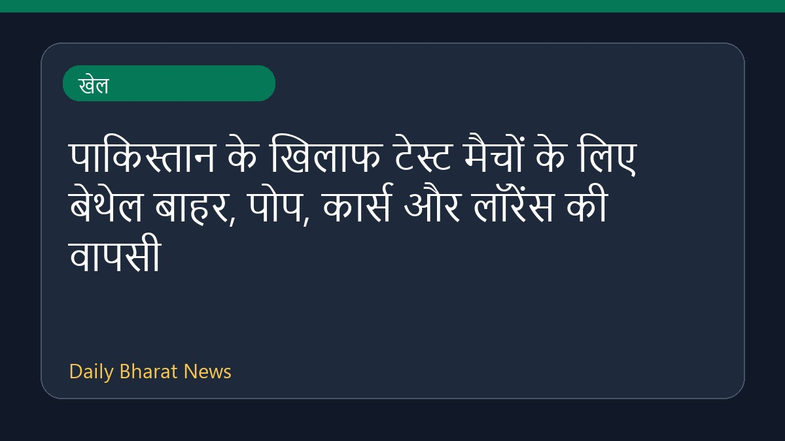

पाकिस्तान के खिलाफ टेस्ट मैचों के लिए बेथेल बाहर, पोप, कार्स और लॉरेंस की वापसी

क्रिकबज की रिपोर्ट के अनुसार, पाकिस्तान के खिलाफ आगामी टेस्ट मैचों के लिए जैकब बेथेल को बाहर कर दिया गया है। वहीं, टीम में ओली पोप, ब्रायडन कार्स और डैन लॉरेंस की वापसी हुई है। इस संबंध में अधिक जानकारी उपलब्ध नहीं है क्योंकि स्रोत में सीमित विवरण ही दिए गए हैं।
मूल स्रोत: Sports News Sources
Bethell ruled out; Pope, Carse, Lawrence return for Pakistan Tests - Cricbuzz ↗
Bethell ruled out; Pope, Carse, Lawrence return for Pakistan Tests - Cricbuzz ↗